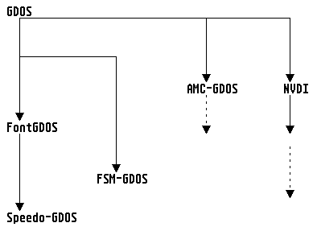
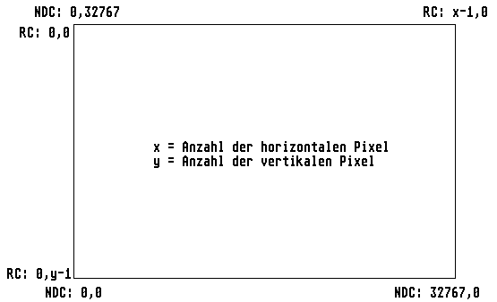
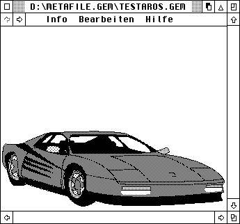
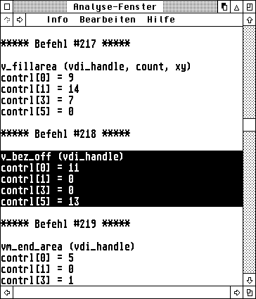
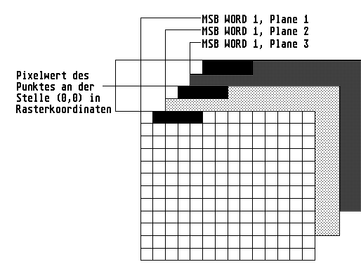

Das VDI (Virtual Device Interface) bildet die untere Hälfte des GEM; es ist sozusagen die Grundlage aller AES-Funktionen.
Auch wenn man mit dem VDI normalerweise primär Funktionen zur Grafikausgabe verbindet, erstreckt sich der Aufgabenbereich auch auf Eingaben (wie z.B. per Maus oder Grafiktablett). Das VDI ist also eine Betriebssystemschicht zur Ansteuerung von (im weitesten Sinn) grafikorientierten Aus- und Eingabegeräten. Dieser Abschnitt beschreibt die Punkte:
Wie das Wörtchen 'Virtual' bereits andeutet, können dabei fast alle Funktionsaufrufe auf jedes verfügbare Ausgabegerät (Bildschirm, Drucker, Plotter, Diabelichter etc.) angewendet werden. Es spielt also keine Rolle, ob man Kreise malen oder Texte ausgeben möchte: dies kann immer mit den gleichen Betriebssystemfunktionen realisiert werden.
Die Wurzeln des VDI liegen im CP/M-GSX-System, das Anfang der 80er Jahre aus dem Bedarf für eine portable Grafikschnittstelle für die damals dominierenden CP/M-Systeme entstand. Ähnlichkeiten in Funktionen und Bezeichnungen zum GKS (Grafisches Kern-System) sind daher keineswegs zufällig, sondern von den Entwicklern bei Digital Research voll beabsichtigt gewesen.
Das VDI erfüllt den ANSI-Standard X3H3.6CG-VDI.
Querverweis: Style-Guidelines
Clipping ist ein Verfahren, das die Benutzung eines Fenstersystems eigentlich erst möglich macht. Dabei gibt man mittels des Clipping-Rechtecks an, auf welchen Bildschirmbereich sich alle Grafikausgaben der betreffenden Workstation beziehen sollen; alles, was aus dem so spezifizierten Bildausschnitt herausragt, wird bei der Bildschirmausgabe übergangen.
Eine zwar wenig effiziente, aber leicht zu programmierende Fensterausgaberoutine würde einfach für jedes zu zeichnende Teilrechteck des Fensters jeweils ein Clipping-Rechteck setzen und dann alle zum Aufbau des Fensterinhaltes notwendigen Bildschirmausgaben wiederholen. Wer sich die Mühe macht, zunächst anhand einer Plausibilitätsabfrage festzustellen, ob das zu zeichnende Objekt überhaupt sichtbar ist, kann natürlich deutlich Zeit sparen.
Hinweis: Wie so vieles im Leben ist auch das Clipping nicht gratis zu haben. Wer eine optimale Geschwindigkeit beim Bildschirmaufbau erreichen will sollte das Clipping-Rechteck so oft wie nur möglich ausschalten.
Querverweis: Grundlagen des VDI Style-Guidelines vs_clip
Einige Funktionen des VDI können erst nach der Installation des GDOS aus dem AUTO-Ordner heraus richtig benutzt werden. Grundsätzlich ermöglicht das GDOS (Graphics Device Operating System) beliebige Gerätetreiber und Zeichensätze zu laden, und dann zu benutzen.
Es ist dabei völlig unabhängig vom verwendeten Gerät. Gerätespezifisch sind nur die nachzuladenden Treiber, die die VDI Funktionen auf dem entsprechenden Gerät realisieren. Bei genauer Kenntnis des Treiberformats ist es so möglich beliebige, und auch exotische Ausgabegeräte als VDI Ausgabegerät zu betreiben.
Mit residentem GDOS erhöht sich die Zahl der Verfügung stehenden VDI-Funktionen, während alle anderen Funktionen voll funktionsfähig bleiben bzw. einen erweiterten Ausgabeumfang erhalten. Umgekehrt ist das aber nicht so, Funktionen, die GDOS benötigen, führen ohne residentes GDOS zum Absturz des Rechners.

Daher ist es in einigen Fällen wichtig zu wissen, ob überhaupt ein vollständiges GDOS installiert ist. Atari hat zu diesem Zweck das folgende Verfahren dokumentiert: Der Trap-Dispatcher verändert den Eingabewert -2 für Register D0 genau dann, wenn ein GDOS installiert ist. Viele Compiler stellen die Funktion vq_gdos zur Verfügung die genau dann einen Wert von 0 zurückliefert wenn kein GDOS installiert ist. Diese Funktion basiert im wesentlichen auf dem folgenden Code:
vq_gdos:
move.w #-2,d0
trap #2
cmp.w #-2,d0
sne d0
ext.w d0
rts
Wichtiger Hinweis: vq_gdos liefert nur die Information, ob ein GDOS vorhanden ist, oder nicht. Es wird nichts darüber ausgesagt, um welches GDOS es sich handelt bzw. welche Fähigkeiten das installierte GDOS besitzt. So läßt sich mit Hilfe dieser Funktion beispielsweise das AMC-GDOS nicht von SpeedoGDOS oder NVDI unterscheiden.
Vorsicht: Die GEM-Versionen des niederländischen Softwarehauses "ABC" (ABC-GEM 2.x) stürzen bei diesem Aufruf ab.
Alternativ gibt es noch vq_vgdos (_vq_gdos):
vq_vgdos:
move.w #-2,d0
trap #2
rts
Als Rückgabe erhält man:
| Name | Wert | GDOS Type |
| GDOS_NONE | -2 | GDOS not installed. |
| - | Any other value. | GDOS 1.0 or 1.2 |
| GDOS_ATARI | 0x0007E88A | GDOS 1.1 von Atari Corp. |
| GDOS_AMC | 0x0007E864 | AMC-GDOS von Arnd Beissner |
| GDOS_AMCLIGHT | 0x0007E8BA | GEMINI-Spezial-GDOS von Arnd Beissner |
| - | 0x3e5d0957 | ttf-gdos von Trevor Blight |
| GDOS_FNT | 0x5F464E54 ('_FNT') | FONTGDOS |
| GDOS_FSM | 0x5F46534D ('_FSM') | FSMGDOS |
| - | 0x66564449 ('fVDI') | fVDI |
Die aktuellen (und leistungsfähigsten) Versionen sind das SpeedoGDOS und NVDI (ab Version 3.0), die es u.a. erlauben Vektorzeichensätze im TrueType, Type-1 bzw. Speedo Format zu verarbeiten. NVDI liegt auch in einer speziellen Macintosh-Version vor (NVDIMac), und ermöglicht es jedem Programm das über GDOS ausgeben kann (in Verbindung mit MagiC Mac), seine Ausgaben auch auf Apple-Druckern und im Netzwerk tätigen zu können.
Querverweis: ASSIGN.SYS-Datei Grundlagen des VDI Style-Guidelines
Die Anmeldung der Zeichensätze und Treiber in der ASSIGN.SYS-Datei geschieht nach folgendem Schema:
<Gerätenummer> <Option> <Name des Treibers> <Kommentar>
Beispiel:
; ASSIGN.SYS-Datei path = C:\gemsys 01p screen.sys ; Bildschirmtreiber (ROM) monaco10.fnt ; Zeichensatz (10 Punkt) monaco12.fnt ; Zeichensatz (12 Punkt) monaco18.fnt ; Zeichensatz (18 Punkt) monaco24.fnt ; Zeichensatz (24 Punkt) 21r laserjet.sys ; HP-Laserjet (resident) 22r necp.sys ; NEC-Pinwriter (resident) 31 meta.sys ; Metafile-Treiber 81 t_office.sys ; Tele-Office
Die Variable path bestimmt das Verzeichnis, in welchem Treiber und Zeichensätze von GDOS gesucht werden. Kommentare werden stets durch ein Semikolon eingeleitet.
Unter Option kann für jeden Treiber ein Flag angegeben werden, das weitere Einzelheiten spezifiziert; es gilt:
| Option | Bedeutung |
| 'p' | Falls NVDI aktiv ist, wird automatisch der passende NVDI-Bildschirmtreiber geladen; anderenfalls wird der Treiber des Atari-VDI benutzt, der sich im ROM befindet. |
| 'r' | Der Treiber wird beim Booten des Systems geladen, und bleibt permanent im Speicher. |
| 'r ' | Der angegebene Zeichensatz wird beim Booten des Systems geladen, und verbleibt resident im Speicher. |
| 's ' | Bindet den angegebenen Zeichensatz als Systemfont ein.
Hinweis: Auf diese Art und Weise können also die echten Systemfonts ersetzt werden; der neue Font muss von den Ausmaßen und der Anzahl der Zeichen mit dem alten Zeichensatz übereinstimmen. |
Achtung: Befindet sich kein Buchstabe hinter einer Gerätekennung, so wird der Treiber auf Anforderung geladen, und später wieder aus dem System entfernt. In der ASSIGN.SYS-Datei können nur Bitmap- (Pixel) zeichensätze, aber keine Vektorzeichensätze angemeldet werden.
Ab PC-GEM/3 existiert die Datei ASSIGN.SYS übrigens nicht mehr. Dort werden die Treiber der Geräte sowie die Zeichensätze, die installiert werden sollen, einfach in den Ordner \GEMAPPS\GEMSYS bzw. in den Ordner \GEMAPPS\FONTS kopiert.
Querverweis: GDOS-Treiber Grundlagen des VDI
Ein GDOS-Treiber ist im wesentlichen eine normale Programmdatei ohne Startup-Code, die als erste Routine einen Dispatcher für die eingehenden VDI-Aufrufe enthält. Alle Treiber müssen in der ASSIGN.SYS-Datei angemeldet sein, die vom GDOS beim Start ausgewertet wird.
Die folgende Liste nennt die wichtigsten Treiber mit ihren jeweiligen Gerätenummern:
| Bildschirm-Treiber | (01-10) |
| Plotter-Treiber | (11-20) |
| Drucker-Treiber | (21-30) |
| Metafile-Treiber | (31-40) |
| Kamera-Treiber | (41-50) |
| Grafiktablett-Treiber | (51-60) |
| Memory-Treiber | (61-70) |
| Fax-Treiber | (81-90) |
| Bit-Image Treiber | (91-100) |
| Multimedia Treiber | (101-110) |
| Sound Treiber | (111-120) |
| Lade und Zeichnen Bit-Image Treiber | (121-130) |
Bei der Implementierung des Dispatchers sollte folgendes beachtet werden:
Ein GDOS-Treiber arbeitet immer im Rasterkoordinaten-System; die Konvertierung der Werte im ptsin- und ptsout-Feld wird vom GDOS übernommen. Darüber hinaus muß beachtet werden, daß nicht alle Funktionen den eigentlichen Treiber exakt so erreichen, wie sie abgeschickt wurden, da sie vom GDOS teilweise vorverarbeitet werden.
Querverweis: GDOS Grundlagen des VDI Bindings des VDI
Der Bildschirmtreiber des TOS kann durch einen eigenen Treiber ersetzt werden, welcher vom GDOS nachgeladen werden muss.
Derartige Treiber gibt es bereits für die unterschiedlichsten Grafikkarten (z.B. NVDI-ET4000 für Grafikkarten mit dem Tseng ET-4000 Chip).
Bei der Anschaffung eines alternativen Bildschirmtreibers sollte darauf geachtet werden, daß der Treiber alle relevanten Funktionen des VDI unterstützt, und auch mit GEM-Zeichensätzen keine Probleme hat.
Querverweis: GDOS-Treiber Mindestfunktionsumfang
Die folgende Liste beschreibt den Funktionsumfang, den ein Bildschirmtreiber mindestens bieten sollte; es handelt sich um eine Spezifikation aus dem Atari "GEM Programmer's Guide".
Mit Hilfe eines Bit-Image Treibers können alle Applikationen, die über das GDOS Ausgaben tätigen können, direkt in eine Datei drucken.
Bei NVDI-Treibern kann bei v_opnwk das Seitenformat und der Name der Bit-Image-Datei gesetzt werden. Der Dateiname kann übrigens auch mit Hilfe von vq_extnd übergeben werden:
contrl[1] = 4; ptsin[2] = 1157; ptsin[3..4] = Zeiger auf den Dateinamen (BYTE *); ptsin[5..6] = Zeiger auf Fehlervariable (int16_t *); ptsin[7] = 0;
Hinweis: Über den Sinn und Unsinn dieses Features kann man sich sicherlich streiten, da es sich bei vq_extnd eigentlich um eine reine Auskunftsfunktion handelt!
Querverweis: GDOS-Treiber ASSIGN.SYS-Datei
Die Auswahl an Drucker-Treibern für das GDOS ist inzwischen fast unerschöpflich; lediglich bei Farbdruckern scheint es noch einige Engpässe zu geben.
Bei der Arbeit mit Drucker-Treibern sollte beachtet werden, daß nicht alle Treiber funktional völlig identisch sind. So gibt es etwa bei Einsatz eines Laserdruckers nicht nur zusätzliche Funktionen, sondern einige bestehende wurden auch teilweise erweitert.
Bei NVDI-Druckertreibern kann bei v_opnwk das Seitenformat und das GEMDOS Ausgabegerät gesetzt werden. Zur Ausgabe von (Farb-) Bildern sollten die Funktionen vrt_cpyfm bzw. vro_cpyfm benutzt werden. Sie lassen sich in NVDI für Druckertreiber (und IMG, usw.) genauso wie die Funktionen des Bildschirmtreibers ansprechen. Der einzige Unterschied besteht darin, daß Raster nicht innerhalb der Druckerbitmap verschoben werden können (Quell- und Ziel-MFDB mit fd_addr == 0L), da die Druckerbitmap i.a. aus mehreren Scheiben besteht, die nacheinander aufbereitet werden. Da Kopieren innerhalb der Gerätebitmap bei der Druckausgabe keinen Sinn macht, stellt dieser Unterschied aber keine Einschränkung dar.
Der Druckertreiber puffert die Bitmap ggf. in der Display-List falls nicht genügend Speicher vorhanden ist; es ist also nicht erforderlich, die Bitmap bis zur Ausgabe mit v_updwk im Speicher zu halten.
Wenn die Bitmap skaliert werden muß, sollte ein Programm wenn möglich nicht selber die Bitmap vergrößern, sondern vrt/vro_cpyfm die Arbeit überlassen. Dadurch steigt die Ausgabequalität, es müssen weniger Daten auf der Festplatte gepuffert werden, und der Ausdruck wird beschleunigt. Ob der Treiber skalieren kann, erfährt man bei Aufruf von vq_extnd.
Bei Ausgabe von Farbbildern im 8-Farbmodus sollten Raster vor dem Dithern mit einer Korrekturfunktion behandelt werden. Hier empfiehlt sich eine Gamma-Korrektur mit Exponent von 0,3 bis 0,4, damit das Bild nicht vollkommen matt und übersättigt aussieht. Im Truecolor-Modus übernimmt der Treiber Farbkorrektur, Schwarz-Separation und andere qualitätsverbessernde Maßnahmen selber - Bitmaps sollten hier ohne vorhergehende Korrektur und ohne Rasterung an den Treiber geschickt werden.
Querverweis: GDOS-Treiber Bitmapformat bei Druckertreibern Mindestfunktionsumfang
Die folgende Liste beschreibt den Funktionsumfang, den ein Druckertreiber mindestens bieten sollte; es handelt sich um eine Spezifikation aus dem Atari "GEM Programmer's Guide".
| Opcode | Funktion | |
| 1 | v_opnwk | |
| 2 | v_clswk | |
| 3 | v_clrwk | |
| 4 | v_updwk | |
| 5 | Escapefunktionen | |
| 1 | vq_chcells | |
| 20 | v_form_adv | |
| 21 | v_output_window | |
| 22 | v_clear_disp_list | |
| 23 | v_bit_image | |
| 6 | v_pline | |
| 7 | v_pmarker | |
| 8 | v_gtext | |
| 9 | v_fillarea | |
| 11 | Ausgabefunktionen | |
| 1 | v_bar | |
| 2 | v_arc | |
| 3 | v_pieslice | |
| 4 | v_circle | |
| 5 | v_ellipse | |
| 6 | v_ellarc | |
| 7 | v_ellpie | |
| 8 | v_rbox | |
| 9 | v_rfbox | |
| 10 | v_justified | |
| 12 | vst_height | |
| 15 | vsl_type | |
| 17 | vsl_color | |
| 18 | vsm_type | |
| 20 | vsm_color | |
| 21 | vst_font | |
| 22 | vst_color | |
| 23 | vsf_interior | |
| 24 | vsf_style | |
| 25 | vsf_color | |
| 26 | vq_color | |
| 32 | vswr_mode | |
| 35 | vql_attributes | |
| 36 | vqm_attributes | |
| 37 | vqf_attributes | |
| 38 | vqt_attributes | |
| 39 | vst_alignment | |
| 102 | vq_extnd | |
| 104 | vsf_perimeter | |
| 106 | vst_effects | |
| 107 | vst_point | |
| 108 | vsl_ends | |
| 112 | vsf_udpat | |
| 116 | vqt_extent | |
| 117 | vqt_width | |
| 129 | vs_clip | |
| 130 | vqt_name | |
| 131 | vqt_fontinfo |
Genauso wie für den Bildschirm liefert vq_scrninfo auch für Drucker das Format der Bitmap zurück. In der Regel gibt es hier nur 3 verschiedene Formate:
Da die Formate (1) und (3) wohl selbsterklärend sind, sei hier nur noch auf Format (2) eingegangen: Bei 8 Farben besteht eine farbige Bitmap aus 3 vollständigen, hintereinander im Speicher liegenden Ebenen (Planes). Das gerätespezifische Rasterformat entspricht also dem Standardformat. Die Zuordnung von VDI-Farbindex zum Pixelwert folgt der Standardeinteilung, die für alle VDI-Treiber gilt.
Querverweis: Drucker-Treiber Rasterformate vro_cpyfm vrt_cpyfm
Ein Fax-Treiber ist im Prinzip nichts anderes als ein einfacher Drucker-Treiber. Mit Hilfe eines solchen Treibers können alle Applikationen, die über das GDOS ausgeben, direkt Telefaxe verschicken.
Bei einem Fax-Treiber kann weder Seitenformat noch GEMDOS-Gerät angegeben werden. Man sollte auch nicht versuchen, die Größe der Bitmap zu verändern.
Querverweis: GDOS-Treiber ASSIGN.SYS-Datei
Da z.Zt. noch keine Treiber für Grafiktabletts existieren, können an dieser Stelle keine weitergehenden Informationen erteilt werden.
Querverweis: GDOS-Treiber ASSIGN.SYS-Datei
Da z.Zt. noch keine Treiber für die Polaroid-Palette existieren, können an dieser Stelle keine weitergehenden Informationen erteilt werden.
Querverweis: GDOS-Treiber Mindestfunktionsumfang
Die folgende Liste beschreibt den Funktionsumfang, den ein Kameratreiber mindestens bieten sollte; es handelt sich um eine Spezifikation von Digital Research zu PC-GEM 2.0.
| Opcode | Funktion | |
| 1 | v_opnwk | |
| 2 | v_clswk | |
| 3 | v_clrwk | |
| 4 | v_updwk | |
| 5 | Escapefunktionen | |
| 1 | vq_chcells | |
| 23 | v_bit_image | |
| 91 | vsp_film | |
| 92 | vqp_filmname | |
| 6 | v_pline | |
| 11 | Ausgabefunktionen | |
| 1 | v_bar | |
| 2 | v_arc | |
| 3 | v_pieslice | |
| 4 | v_circle | |
| 5 | v_ellipse | |
| 6 | v_ellarc | |
| 7 | v_ellpie | |
| 8 | v_rbox | |
| 9 | v_rfbox | |
| 10 | v_justified | |
| 12 | vst_height | |
| 13 | vst_rotation | |
| 14 | vs_color | |
| 15 | vsl_type | |
| 16 | vsl_width | |
| 17 | vsl_color | |
| 18 | vsm_type | |
| 19 | vsm_height | |
| 20 | vsm_color | |
| 21 | vst_font | |
| 22 | vst_color | |
| 23 | vsf_interior | |
| 24 | vsf_style | |
| 25 | vsf_color | |
| 26 | vq_color | |
| 32 | vswr_mode | |
| 35 | vql_attributes | |
| 36 | vqm_attributes | |
| 37 | vqf_attributes | |
| 38 | vqt_attributes | |
| 39 | vst_alignment | |
| 102 | vq_extnd | |
| 104 | vsf_perimeter | |
| 106 | vst_effects | |
| 107 | vst_point | |
| 108 | vsl_ends | |
| 112 | vsf_udpat | |
| 113 | vsl_udsty | |
| 116 | vqt_extent | |
| 117 | vqt_width | |
| 119 | vst_load_fonts | |
| 120 | vst_unload_fonts | |
| 129 | vs_clip | |
| 130 | vqt_name | |
| 131 | vqt_fontinfo |
Ein Memory-Treiber ist im Prinzip ein Bildschirmtreiber, bei dem die Ausgaben nicht im Bildschirmspeicher, sondern in einem anderen Speicherbereich landen, und dort dann weiterverarbeitet werden können.
Die z.Zt. verfügbaren Treiber unterstützen nur eine monochrome Bitmap, und besitzen eine logische Auflösung von 300dpi. Leider stimmt das Aspect-Ratio Verhältnis i.a. nicht mit der aktuellen Auflösung des Bildschirms überein, was zur Folge hat, daß Kreise beispielsweise als Ellipsen dargestellt werden.
Die Auflösung der Bitmap kann per v_opnwk gesetzt werden, indem in ptsin[0..1] die Breite-1 bzw. Höhe-1 sowie in contrl[1] der Wert 1 geschrieben werden. Nach dem Aufruf der Funktion wird die Adresse der Bitmap in contrl[0..1] zurückgeliefert. Darüber hinaus ist es auch möglich, die Bitmap-Größe per vq_extnd zu setzen. In diesem Fall ist es zusätzlich möglich, einen eigenen Buffer zu übergeben. Dazu setzt man contrl[3] auf den Wert 3 und übergibt in intin[1..2] einen Zeiger auf den Buffer.
Aufgrund der größeren Flexibilität sollte Off-Screen-Bitmaps der Vorzug gegenüber Memory-Treibern gegeben werden.
Querverweis: GDOS-Treiber ASSIGN.SYS-Datei
Ein Metafile-Treiber speichert alle an ihn gerichteten Aufrufe in einem GEM-Metafile, welches sich im aktuellen Verzeichnis der Applikation befindet und als Voreinstellung den Namen GEMFILE.GEM trägt.
Möchte man den Namen ändern, so sollte direkt nach v_opnwk die Funktion vm_filename aufgerufen werden, der man einen kompletten Dateinamen mit dem gewünschten Pfad und Namen übergeben kann.
Damit andere Programme ein Metafile vernünftig darstellen können, sollten die Funktionen v_meta_extents, vm_pagesize und vm_coords aufgerufen werden.
Querverweis:
v_meta_extents vm_pagesize vm_coords GDOS-Treiber Mindestfunktionsumfang
Die folgende Liste beschreibt den Funktionsumfang, den ein Metafiletreiber mindestens bieten sollte; es handelt sich um eine Spezifikation aus dem Atari "GEM Programmer's Guide".
| Opcode | Funktion | |
| 1 | v_opnwk | |
| 2 | v_clswk | |
| 3 | v_clrwk | |
| 4 | v_updwk | |
| 5 | Escapefunktionen | |
| 1 | vq_chcells | |
| 2 | v_exit_cur | |
| 3 | v_enter_cur | |
| 20 | v_form_adv | |
| 21 | v_output_window | |
| 22 | v_clear_disp_list | |
| 23 | v_bit_image | |
| 98 | v_meta_extents | |
| 99 | v_write_meta | |
| 100 | vm_filename | |
| 6 | v_pline | |
| 7 | v_pmarker | |
| 8 | v_gtext | |
| 9 | v_fillarea | |
| 11 | Ausgabefunktionen | |
| 1 | v_bar | |
| 2 | v_arc | |
| 3 | v_pieslice | |
| 4 | v_circle | |
| 5 | v_ellipse | |
| 6 | v_ellarc | |
| 7 | v_ellpie | |
| 8 | v_rbox | |
| 9 | v_rfbox | |
| 10 | v_justified | |
| 12 | vst_height | |
| 13 | vst_rotation | |
| 14 | vs_color | |
| 15 | vsl_type | |
| 16 | vsl_width | |
| 17 | vsl_color | |
| 18 | vsm_type | |
| 19 | vsm_height | |
| 20 | vsm_color | |
| 21 | vst_font | |
| 22 | vst_color | |
| 23 | vsf_interior | |
| 24 | vsf_style | |
| 25 | vsf_color | |
| 26 | vq_color | |
| 32 | vswr_mode | |
| 35 | vql_attributes | |
| 36 | vqm_attributes | |
| 37 | vqf_attributes | |
| 38 | vqt_attributes | |
| 39 | vst_alignment | |
| 102 | vq_extnd | |
| 103 | v_contourfill | |
| 104 | vsf_perimeter | |
| 106 | vst_effects | |
| 107 | vst_point | |
| 108 | vsl_ends | |
| 112 | vsf_udpat | |
| 113 | vsl_udsty | |
| 114 | vr_recfl | |
| 117 | vqt_width | |
| 129 | vs_clip | |
| 131 | vqt_fontinfo |
Nach langer Durststrecke sind mittlerweile auch GDOS-Plottertreiber verfügbar. So wird z.B. bei dem Programm DATA ein HPGL-Treiber mitgeliefert, und auch auf der PD-Diskette Nummer 458 der Zeitschrift ST-Computer befindet sich ein solcher Treiber.
Genauere Informationen zu Plottertreibern sind z.Zt. jedoch noch nicht bekannt.
Querverweis: GDOS-Treiber Mindestfunktionsumfang
Die folgende Liste beschreibt den Funktionsumfang, den ein Plottertreiber mindestens bieten sollte; es handelt sich um eine Spezifikation aus dem Atari "GEM Programmer's Guide".
| Opcode | Funktion | |
| 1 | v_opnwk | |
| 2 | v_clswk | |
| 3 | v_clrwk | |
| 4 | v_updwk | |
| 5 | Escapefunktionen | |
| 1 | vq_chcells | |
| 6 | v_pline | |
| 7 | v_pmarker | |
| 8 | v_gtext | |
| 9 | v_fillarea | |
| 11 | Ausgabefunktionen | |
| 1 | v_bar | |
| 2 | v_arc | |
| 3 | v_pieslice | |
| 4 | v_circle | |
| 5 | v_ellipse | |
| 6 | v_ellarc | |
| 7 | v_ellpie | |
| 8 | v_rbox | |
| 9 | v_rfbox | |
| 10 | v_justified | |
| 12 | vst_height | |
| 15 | vsl_type | |
| 17 | vsl_color | |
| 18 | vsm_type | |
| 20 | vsm_color | |
| 21 | vst_font | |
| 22 | vst_color | |
| 23 | vsf_interior | |
| 24 | vsf_style | |
| 25 | vsf_color | |
| 35 | vql_attributes | |
| 36 | vqm_attributes | |
| 37 | vqf_attributes | |
| 38 | vqt_attributes | |
| 39 | vst_alignment | |
| 102 | vq_extnd | |
| 104 | vsf_perimeter | |
| 107 | vst_point | |
| 108 | vsl_ends | |
| 116 | vqt_extent | |
| 117 | vqt_width | |
| 130 | vqt_name | |
| 131 | vqt_fontinfo |
Das VDI unterscheidet zwei verschiedene Typen von Koordinatensystemen:
Rasterkoordinaten (RC): Bei Verwendung dieses Systems
kann man exakt das dem Ausgabegerät eigene Koordinatensystem
benutzen. Bei einem Bildschirm entspricht das den horizontal und
vertikal verfügbaren Pixeln. Der Nullpunkt liegt in der linken
oberen Ecke.
Hauptvorteil der Rasterkoordinaten ist die absolut exakte
Positionierung die die genaue Arbeit mit Bildschirmrastern (Fenster
etc). erst möglicht macht.
normalisierte Koordinaten (NDC): Dieses System besitzt
immer eine maximale Auflösung von 32768*32768 Punkten. Das VDI rechnet
beim Aufruf eines Gerätetreibers automatisch auf dessen
physikalisches Koordinatensystem um. Der Nullpunkt liegt in der linken
unteren Ecke. Zur Arbeit mit dem NDC-System muß ein GDOS
installiert sein - der Bildschirmtreiber im ROM kann keine
NDC-Koordinaten verarbeiten.
Die folgende Abbildung macht den Unterschied zwischen RC- und NDC-Koordinaten noch einmal besonders deutlich:

Hinweis: In der Praxis wird das NDC-System nur selten benutzt. Programme, die exakte Bemaßungen anbieten müssen (Desktop-Publishing, wissenschaftliche Grafik) müssen intern sowieso eine eigene, feinere Koordinatendarstellung benutzen.
Die Verwendung des NDC-Systems würde dazu führen, daß Koordinaten gleich zweimal konvertiert werden (einmal von der internen Darstellung in NDC-Koordinaten, anschließend in Rasterkoordinaten), was zu überflüssigen Geschwindigkeitsverlusten und Rundungsfehlern führt.
Querverweis: Grundlagen des VDI Style-Guidelines
Metadateien sind nichts anderes als abgespeicherte VDI-Befehle, die in objektorientierten Programmen wie GEMDRAW oder Kandinsky benutzt werden. Der Hauptzweck ist dabei der standardisierte Datenaustausch zwischen verschiedenen GEM-Applikationen. Eine Metadatei beginnt mit einem Kopf, der die Charakteristika der in ihr enthaltenen Grafik beschreibt, und wie folgt aufgebaut ist:
typedef struct
{
int16_t id; /* besitzt stets den Wert 0xffff */
int16_t headlen; /* Länge des Kopfes */
int16_t version; /* Versionsnummer */
int16_t transform; /* NDC- oder RC-Koordinatensystem */
int16_t extents[4]; /* max. Ausmaße der Grafik (optional) */
int16_t pagesize[2]; /* Seitengröße in 1/10mm (optional) */
int16_t coords[4]; /* Koordinatensystem (optional) */
int16_t bit_image; /* Bit-Image vorhanden (1) oder nicht (0) */
int16_t reserved[9]; /* reserviert */
} META_HEADER;
Hinweis: Die Komponente bit_image des Headers gibt an, ob sich eine Bit-Image-Datei in der Metafile-Datei befindet. Tatsächlich befindet sich jedoch in keiner Metadatei eine Pixelgrafik; zeichnet man beispielsweise in GEMPAINT ein Bild namens 'test', so erstellt das Programm außer der Datei 'test.img' noch die Datei 'test.gem'. In letzterer befindet sich genau ein VDI-Befehl (v_bit_image), und die Komponente bit_image besitzt dann den Wert 1.
Beim Lesen von Metafiles wird keine feste Länge benutzt; vielmehr liest eine Applikation zunächst die ersten beiden Wörter (und damit die Länge) des Headers. Anschließend wird der Rest des Kopfes gelesen. Es folgen dann beliebig viele Einträge der Form:
| Wort | Inhalt | Belegung |
| 0 | contrl[0] | VDI-Befehlsnummer |
| 1 | contrl[1] | Anzahl der Werte in ptsin |
| 2 | contrl[3] | Anzahl der Werte in intin |
| 3 | contrl[5] | Unterfunktionsnummer |
| ab 4 | ptsin[] | Belegung des ptsin-Feldes |
| danach | intin[] | Belegung des intin-Feldes |
Das Ende eines Metafiles wird durch den Wert -1 (für contrl[0]) angezeigt. Wichtig: Metadateien liegen immer im Intel-Format (low-high) vor. Um auf einem 680X0er-System Metadateien zu bearbeiten, muss daher beim Einlesen in jedem Wort das nieder- und höherwertige Byte vertauscht werden.
Über die Komponente pagesize lassen sich Angaben zur Seitenbreite und -höhe ermitteln. Möchte man Metadateien erstellen, so wird man diesen beiden Werten Standardgrößen geben. Folgende Standardgrößen werden von den meisten GEM-Programmen unterstützt:
| Bezeichnung | Zoll | Zentimeter |
| Letter | 8,50 * 11,00 | 21,59 * 27,94 |
| Legal | 8,50 * 14,00 | 21,59 * 35,56 |
| Half | 8,50 * 5,50 | 21,59 * 13,97 |
| Ledger | 11,00 * 17,00 | 27,94 * 43,18 |
| DIN A3 | 11,69 * 16,54 | 29,70 * 42,00 |
| DIN A4 | 8,07 * 11,69 | 21,00 * 29,70 |
| DIN A5 | 5,85 * 8,27 | 14,80 * 21,00 |
| DIN B5 | 7,17 * 9,84 | 18,20 * 25,00 |
| Wide | 14,00 * 11,00 | 35,56 * 27,94 |
Die Werte für pagesize[0] (Breite) und pagesize[1] (Höhe) ergeben sich dabei aus den Zentimeter-Werten multipliziert mit 100.
Querverweis:
Metafile-Treiber Metafile-Funktionen Sub-Opcodes XIMG-Format OUT-Dateiformat
Das GEM-Metafile-Format kann durch benutzerdefinierte Sub-Opcodes nahezu beliebig erweitert werden, ohne daß Inkompatibilitäten entstehen. Es sollten lediglich die folgenden zwei Punkte beachtet werden:
da die Nummern von 0 bis 100 für das Betriebssystem reserviert
sind, kommen für Sub-Opcodes nur Nummern ab 101 in Frage.
jeder Entwickler sollte darauf achten, daß der von ihm
vorgesehene Opcode nicht bereits anderweitig belegt ist, um einen
reibungslosen Datenaustausch zu gewährleisten.
Die folgende Liste enthält eine Beschreibung der z.Zt. definierten und bekannten Opcodes:
| Code Name | Beschreibung | ||||||||||||||||||||||||||||
| 10 GEM_START_GROUP | Definiert den Beginn einer Gruppe, d.h. einer Menge zusammengehörender Objekte. | ||||||||||||||||||||||||||||
| 11 GEM_END_GROUP | Markiert das Ende einer Gruppe, d.h. einer Menge zusammengehörender Objekte. | ||||||||||||||||||||||||||||
| 32 GEM_BEZ_QUAL | siehe v_bez_qual | ||||||||||||||||||||||||||||
| 34 ??? | z.Zt. keine Informationen bekannt. | ||||||||||||||||||||||||||||
| 49 GEM_NO_LINE_STYLE | Jeglicher Linienstil soll ausgeschaltet werden. | ||||||||||||||||||||||||||||
| 50 GEM_START_SHADOW | Informiert darüber, daß die bis GEM_END_SHADOW folgenden VDI-Befehle dazu benutzt werden, um für das erste Objekt nach GEM_END_SHADOW einen Schatten zu zeichnen. | ||||||||||||||||||||||||||||
| 51 GEM_END_SHADOW | Markiert das Ende einer Folge von Befehlen die zum Zeichnen eines Objektschattens benutzt werden, und per GEM_START_SHADOW eingeleitet werden. | ||||||||||||||||||||||||||||
| 80 GEM_START_FILL | |||||||||||||||||||||||||||||
| 81 GEM_END_FILL | Alle zwischen diesen beiden Codes liegenden Befehle werden dazu
benutzt, um eine ausgefüllte Fläche mit oder ohne Umrandung zu
zeichnen.
Beispiel: Schrittweises Zeichnen einer Polygonfläche mit Schatten und Umrandung.
| ||||||||||||||||||||||||||||
| 101 VM_VER_APP | Gibt Auskunft über den Namen und die Versionsnummer der
Applikation, die eine Metadatei erstellt hat. Es gilt:
Hinweis: Der Name der Applikation sollte immer ohne Suffix angegeben werden, da dieses auf verschiedenen GEM-Systemen unterschiedlich sein kann. | ||||||||||||||||||||||||||||
| 102 GEM_COLOR | z.Zt. keine Informationen bekannt. | ||||||||||||||||||||||||||||
| 103 ??? | z.Zt. keine Informationen bekannt. | ||||||||||||||||||||||||||||
| 107 ??? | z.Zt. keine Informationen bekannt. | ||||||||||||||||||||||||||||
| 111 ??? | z.Zt. keine Informationen bekannt. | ||||||||||||||||||||||||||||
| 170 GEM_START_BGIF | Leitet eine Textausgabe per BGI-Vektorzeichensatz ein. Es gilt:
Bis GEM_END_BGIF folgen die v_pline Befehle, die zur Darstellung des Textes notwendig sind, falls ein Programm diese Sub-Opcodes nicht interpretieren kann. | ||||||||||||||||||||||||||||
| 171 GEM_END_BGIF | kennzeichnet das Ende einer Textausgabe per BGI-Vektorschrift. | ||||||||||||||||||||||||||||
| 190 GEM_WIND | Legt Position, Zoomstufe und Format eines Fensters fest; es
gilt:
| ||||||||||||||||||||||||||||
| 191 GEM_GRID | Ermöglicht das dauerhafte Sichern der Rastereinstellungen
eines Fensters; es gilt:
| ||||||||||||||||||||||||||||
| 192 GEM_ALIGN | Beschreibt das Bezugs-Objekt; es gilt:
| ||||||||||||||||||||||||||||
| 193 GEM_START_GREY | Legt einen Grauton als Füllfläche fest; dabei sind
Abstufungen im Bereich von 0..255 (weiß..schwarz) möglich. Es gilt:
Die bis GEM_END_GREY folgenden Befehle setzen ein benutzerdefiniertes Muster mit dem entsprechenden Grauton; sie dienen nur für Programme, die mit diesen Opcodes nichts anfangen können. | ||||||||||||||||||||||||||||
| 194 GEM_END_GREY | Kennzeichnet das Ende eines benutzerdefinierten Grauton-Musters. | ||||||||||||||||||||||||||||
| 195 GEM_START_BEZIER | Definiert einen Bezier-Zug. Es gilt:
Bis GEM_END_BEZIER folgen dann v_pline Aufrufe, die für Programme, die den Sub-Opcode nicht verstehen, einen äquivalenten Polygonzug zeichnen. | ||||||||||||||||||||||||||||
| 196 GEM_END_BEZIER | Kennzeichnet das Ende eines Bezier-Zugs. | ||||||||||||||||||||||||||||
| 197 GEM_START_JOIN | Erlaubt es, mehr Koordinaten abzuspeichern, als der
Metafile-Treiber erlaubt. Findet eine Applikation diesen Sub-Opcode so
werden die ptsin-Felder der bis GEM_END_JOIN folgenden VDI-Blöcke zu
einem grossen Feld zusammengefasst. Es gilt:
| ||||||||||||||||||||||||||||
| 198 GEM_END_JOIN | Kennzeichnet das Ende eines per GEM_START_JOIN definierten Abschnitts. | ||||||||||||||||||||||||||||
| 199 ??? | z.Zt. keine Informationen bekannt. | ||||||||||||||||||||||||||||
| 201 ??? | z.Zt. keine Informationen bekannt. | ||||||||||||||||||||||||||||
| 203 ??? | z.Zt. keine Informationen bekannt. | ||||||||||||||||||||||||||||
| 230 ??? | z.Zt. keine Informationen bekannt. |
Hinweis: Beim Lesen eines Metafiles sollte ein Programm unbekannte Anweisungen unbedingt ignorieren.
Querverweis: v_write_meta Beispiel-Binding Analysieren eines Metafiles
Zum Verständnis des Metafile-Formats kann es nützlich sein, sich den Inhalt einer Metadatei im Klartext anzeigen zu lassen. Die hierzu notwendigen Tools befinden sich in vielen Mailboxen des Mausnetzes.

Beispiel: Die Abbildung oben zeigt ein Fenster der Graphiksoftware GEM-Look, mit einer darin befindlichen Vektorgrafik im Metafile-Format.
Die Software erlaubt es u.a. sich den Inhalt einer GEM-Metadatei im Klartext anzeigen, und diesen sogar in beliebigen Schritten abarbeiten zu lassen.
Darüber hinaus kann über eine Dialogbox genau spezifiziert werden welche Informationen bei der Analyse berücksichtigt bzw. ausgegeben werden sollen, und in welchem Format die Ausgabe erscheinen soll.

Die Klartext-Information wird dabei in einem Fenster dargestellt, und kann (ganz oder teilweise) über das Klemmbrett in andere Programme übertragen werden.
Dadurch, daß sich alle Befehle des Ausgabefensters auch einzeln und in beliebiger Reihenfolge ausführen lassen, lassen sich die in einer Metadatei gespeicherten Befehle sehr leicht nachvollziehen.
Querverweis:
Beispiel-Analyse Metafile-Format Metafile Sub-Opcodes
/* Das folgende Code-Fragment erlaubt es, den Namen und die
Versionsnummer der Applikation, die eine Metadatei er-
stellt, im Metafile abzulegen... */
GLOBAL void vm_ver_app( int16_t vdi_handle, int16_t version,
uint8_t *app_name)
{
int16_t i;
contrl[0] = 5;
contrl[1] = 0;
contrl[3] = 2 + strlen (app_name);
contrl[5] = 99; /* v_write_meta */
contrl[6] = vdi_handle;
intin[0] = VM_VER_APP;
intin[1] = version;
i = 2;
while ((intin [i++] = (int16_t) (uint8_t)*app_name++) != 0)
;
vdi ();
} /* vm_ver_app */
Querverweis: VDI-Bindings Metafile-Format
// Diese Analyse wurde erstellt von GEM-Look, dem Programm zum
// Anzeigen und Analysieren von Grafiken im XIMG und Metafile-
// Format; (c) 1994-1995 by Rolf Kotzian.
//
// Es ist nicht erlaubt, Teile der Analyse ohne diesen Header
// zu verbreiten
Analyse von: E:\C\GEISS\EXAMPLES\GEM_IMG\BEZIER.GEM
Metafile-ID : -1
Länge des Kopfes : 24
GEM-Version : 3.10
NDC/RC Flag : RC
Ausmaß minimales x : -2720
Ausmaß minimales y : -2136
Ausmaß maximales x : 2112
Ausmaß maximales y : 1592
Seiten-Breite : 14.80 cm
Seiten-Höhe : 21.00 cm
Koord.System linkes x : -3495
Koord.System linkes y : 4960
Koord.System rechtes x : 3495
Koord.System rechtes y : -4960
Bit-Image vorhanden? : nein
***** Befehl #1 *****
vswr_mode (vdi_handle, mode)
contrl[0] = 32
contrl[1] = 0
contrl[3] = 1
contrl[5] = 100
intin[0] = 1
***** Befehl #2 *****
vsl_type (vdi_handle, style)
contrl[0] = 15
contrl[1] = 0
contrl[3] = 1
contrl[5] = 100
intin[0] = 1
***** Befehl #3 *****
vsl_width (vdi_handle, width)
contrl[0] = 16
contrl[1] = 1
contrl[3] = 0
contrl[5] = 100
ptsin[0] = x = 1
ptsin[1] = y = 1
***** Befehl #4 *****
vsl_color (vdi_handle, index)
contrl[0] = 17
contrl[1] = 0
contrl[3] = 1
contrl[5] = 100
intin[0] = 1
***** Befehl #5 *****
vsl_ends (vdi_handle, beg_style, end_style)
contrl[0] = 108
contrl[1] = 0
contrl[3] = 2
contrl[5] = 100
intin[0] = 0
intin[1] = 0
***** Befehl #6 *****
vsm_type (vdi_handle, symbol)
contrl[0] = 18
contrl[1] = 0
contrl[3] = 1
contrl[5] = 100
intin[0] = 1
***** Befehl #7 *****
vsm_height (vdi_handle, height)
contrl[0] = 19
contrl[1] = 1
contrl[3] = 0
contrl[5] = 100
ptsin[0] = x = 1
ptsin[1] = y = 1
***** Befehl #8 *****
vsm_color (vdi_handle, index)
contrl[0] = 20
contrl[1] = 0
contrl[3] = 1
contrl[5] = 100
intin[0] = 1
***** Befehl #9 *****
vst_rotation (vdi_handle, angle)
contrl[0] = 13
contrl[1] = 0
contrl[3] = 1
contrl[5] = 100
intin[0] = 0
***** Befehl #10 *****
vst_font (vdi_handle, font)
contrl[0] = 21
contrl[1] = 0
contrl[3] = 1
contrl[5] = 100
intin[0] = 1
***** Befehl #11 *****
vst_color (vdi_handle, index)
contrl[0] = 22
contrl[1] = 0
contrl[3] = 1
contrl[5] = 100
intin[0] = 1
***** Befehl #12 *****
vst_alignment (vdi_handle, hor_in, vert_in, hor_out, vert_out)
contrl[0] = 39
contrl[1] = 0
contrl[3] = 2
contrl[5] = 100
intin[0] = 0
intin[1] = 0
***** Befehl #13 *****
vst_effects (vdi_handle, effect)
contrl[0] = 106
contrl[1] = 0
contrl[3] = 1
contrl[5] = 100
intin[0] = 0
***** Befehl #14 *****
vst_point (vdi_handle, point, char_width, char_height, cell_width,
cell_height)
contrl[0] = 107
contrl[1] = 0
contrl[3] = 1
contrl[5] = 100
intin[0] = 12
***** Befehl #15 *****
vsf_interior (vdi_handle, style)
contrl[0] = 23
contrl[1] = 0
contrl[3] = 1
contrl[5] = 100
intin[0] = 1
***** Befehl #16 *****
vsf_style (vdi_handle, index)
contrl[0] = 24
contrl[1] = 0
contrl[3] = 1
contrl[5] = 100
intin[0] = 1
***** Befehl #17 *****
vsf_color (vdi_handle, index)
contrl[0] = 25
contrl[1] = 0
contrl[3] = 1
contrl[5] = 100
intin[0] = 1
***** Befehl #18 *****
vsf_perimeter (vdi_handle, per_vis)
contrl[0] = 104
contrl[1] = 0
contrl[3] = 1
contrl[5] = 100
intin[0] = 1
***** Befehl #19 *****
v_write_meta (vdi_handle, num_ints, ints, num_pts, pts)
contrl[0] = 5
contrl[1] = 0
contrl[3] = 7
contrl[5] = 99
intin[0] = 34
intin[1] = 3
intin[2] = 1
intin[3] = 42
intin[4] = 42
intin[5] = 42
intin[6] = 42
***** Befehl #20 *****
v_bez_on (vdi_handle)
contrl[0] = 11
contrl[1] = 1
contrl[3] = 0
contrl[5] = 13
***** Befehl #21 *****
vsf_perimeter (vdi_handle, per_vis)
contrl[0] = 104
contrl[1] = 0
contrl[3] = 2
contrl[5] = 13
intin[0] = 1
intin[1] = 1
***** Befehl #22 *****
vsf_color (vdi_handle, index)
contrl[0] = 25
contrl[1] = 0
contrl[3] = 1
contrl[5] = 13
intin[0] = 2
***** Befehl #23 *****
vsf_interior (vdi_handle, style)
contrl[0] = 23
contrl[1] = 0
contrl[3] = 1
contrl[5] = 13
intin[0] = 0
***** Befehl #24 *****
vsf_style (vdi_handle, index)
contrl[0] = 24
contrl[1] = 0
contrl[3] = 1
contrl[5] = 13
intin[0] = 0
***** Befehl #25 *****
vsl_color (vdi_handle, index)
contrl[0] = 17
contrl[1] = 0
contrl[3] = 1
contrl[5] = 13
intin[0] = 3
***** Befehl #26 *****
vsl_width (vdi_handle, width)
contrl[0] = 16
contrl[1] = 1
contrl[3] = 0
contrl[5] = 13
ptsin[0] = x = 1
ptsin[1] = y = 0
***** Befehl #27 *****
vsf_perimeter (vdi_handle, per_vis)
contrl[0] = 104
contrl[1] = 0
contrl[3] = 2
contrl[5] = 13
intin[0] = 1
intin[1] = 1
***** Befehl #28 *****
vsl_ends (vdi_handle, beg_style, end_style)
contrl[0] = 108
contrl[1] = 0
contrl[3] = 2
contrl[5] = 13
intin[0] = 0
intin[1] = 0
***** Befehl #29 *****
v_bez (vdi_handle, count, xyarr, bezarr, minmax, npts, nmove)
contrl[0] = 6
contrl[1] = 17
contrl[3] = 9
contrl[5] = 13
ptsin[0] = x = -2125
ptsin[1] = y = 100
ptsin[2] = x = -708
ptsin[3] = y = -441
ptsin[4] = x = 237
ptsin[5] = y = 640
ptsin[6] = x = 1654
ptsin[7] = y = -981
ptsin[8] = x = 237
ptsin[9] = y = 640
ptsin[10] = x = -1180
ptsin[11] = y = 2261
ptsin[12] = x = 2127
ptsin[13] = y = 1723
ptsin[14] = x = 2127
ptsin[15] = y = 100
ptsin[16] = x = 2127
ptsin[17] = y = -1522
ptsin[18] = x = -708
ptsin[19] = y = 100
ptsin[20] = x = 237
ptsin[21] = y = -981
ptsin[22] = x = 1182
ptsin[23] = y = -2062
ptsin[24] = x = -2124
ptsin[25] = y = -2601
ptsin[26] = x = -2597
ptsin[27] = y = -1522
ptsin[28] = x = -3070
ptsin[29] = y = -441
ptsin[30] = x = -1653
ptsin[31] = y = -440
ptsin[32] = x = -2125
ptsin[33] = y = 100
intin[0] = 2344
intin[1] = 4112
intin[2] = 4105
intin[3] = 2320
intin[4] = 4112
intin[5] = 4105
intin[6] = 2320
intin[7] = 4112
intin[8] = 12
***** Befehl #30 *****
v_bez_off (vdi_handle)
contrl[0] = 11
contrl[1] = 0
contrl[3] = 0
contrl[5] = 13
***** Befehl #31 *****
vsf_perimeter (vdi_handle, per_vis)
contrl[0] = 104
contrl[1] = 0
contrl[3] = 2
contrl[5] = 13
intin[0] = 0
intin[1] = 0
// Ende der Analyse
// GEM-Look, (c) 1994/95 by Rolf Kotzian
Querverweis: Analyse eines Metafiles VDI-Bindings
Die Versionsnummer hängt davon ab, mit welchem GEM-System die Metadatei erstellt worden ist; sie wird durch die Formel 100 * Hauptversionsnummer + Nebenversionsnummer beschrieben.
Beispiel: Der Wert 301 steht für Version 3.1
NVDI (NewVDI) ist ein von den Behne-Brüdern entwickeltes VDI, welches das Original des Atari vollständig ersetzt. Dabei besticht neben der sehr hohen Geschwindigkeit vor allem die Möglichkeit, Vektorzeichensätze der Formate Speedo und TrueType (mit einem speziellen Modul auch Type-1) verwenden zu können. NVDI liegt auch in einer speziellen Macintosh-Version vor (NVDIMac), und ermöglicht es jedem Programm das über GDOS ausgeben kann (in Verbindung mit MagiC Mac), seine Ausgaben auch auf Apple-Druckern und im Netzwerk tätigen zu können.
Um herauszufinden, welche NVDI-Version man vor sich hat und welchen Funktionsumfang sie hat, muß der Cookie NVDI gesucht werden, der die Versionsnummer im BCD-Format enthält (z.B. 0x0410 für Version 4.10).
Wer die Offscreen-Bitmaps nutzen möchte, sollte nach dem 'EdDI'-Cookie suchen (z.B. per is_EdDI()). Das auf die Kennung folgende Langwort ist die Adresse eines Dispatchers, der mit der Funktionsnummer in Register d0.w aufgerufen wird. Für den Aufruf gelten die Pure C-Konventionen, d.h. Register d0-d2/a0-a1 und der Stack werden zur Parameterübergabe benutzt, d0-d2/a0-a1 können verändert werden. Die Funktion 0 liefert die EdDI-Versionsnummer im BCD-Format (z.B. 0x0110 für Version 1.10).
Querverweis:
Off-Screen-Bitmaps v_opnbm v_clsbm Grundlagen des VDI
vq_scrninfo GEM
Beispiel-Code für Pure-C:
GLOBAL BOOLEAN is_EdDI ()
{
int16_t (*func)(int16_t);
if (get_cookie ("EdDI", (LONG *) &func))
return ((*func)(0));
else return (FALSE);
} /* is_EdDI */
Für viele Anwendungen ist es sehr nützlich, wenn Zeichenfunktionen nicht direkt auf den Bildschirm, sondern auf einen nicht sichtbaren Bildschirm angewendet werden können. Einen derartigen "versteckten" Bildschirm nennt man Off-Screen-Bitmap.
Zur Erzeugung von Off-Screen-Bitmaps dient die Funktion v_opnbm(). Man kann ihr entweder die Größe eines Bitmap angeben, die Sie allozieren soll, oder ihr eine Bitmap übergeben. Die Bitmap wird im gleichen Format wie die des Bildschirms verwaltet, wodurch schnelles Kopieren zwischen beiden möglich ist. Die Funktion v_clsbm() schließt eine mit v_opnbm() erzeugte Bitmap und gibt gegebenenfalls deren Speicher zurück.
Rasteroperationen zwischen Bildschirm und Off-Screen-Bitmap sollten grundsätzlich im gerätespezifischen Format erfolgen. Wenn als Ziel einer Rasteroperation eine Off-Screen-Bitmap mit ihrem MFDB angegeben wird und wenn das zu dieser Bitmap gehörende Handle benutzt wird, so wird beim Blitten anhand der über vs_clip() auf dieser Workstation eingestellten Koordinaten geclippt. Für das Kopieren eines Rasters vom Bildschirm in eine Off-Screen-Bitmap sollte man also das vdi_handle dieser Bitmap benutzen.
Ist die Bitmap dagegen Quelle und der Bildschirm Ziel, so sollte man das Handle der Bildschirm-Workstation benutzen, da dann das Raster anhand der Bildschirm-Koordinaten abgeclippt wird. Wenn man das von v_opnbm() zurückgelieferte Handle einer Bitmap benutzt und in fd_addr in einem MFDB 0 enthält, so werden die Daten der Bitmap statt dessen benutzt.
Querverweis: NVDI GDOS Style-Guidelines
Das OUT-Format wurde von Digital Research entwickelt und ermöglicht wie das XIMG oder Metafile-Format den Datenaustausch zwischen beliebigen GEM-Applikationen. Genauer gesagt können hiermit Steuerzeichen für Textattribute in eine Datei mit dem Suffix ".out" geschrieben werden, die dann vom Ausgabetreiber erkannt, und berücksichtigt werden.
Das OUT-Format ist somit besonders geeignet, um Textdateien mit Attributen zwischen verschiedenen Applikationen auszutauschen. OUT-Dateien sind nicht anderes als ASCII-Dateien, die zum Umschalten zwischen Textattributen den Steuercode DC2 (ASCII-Wert 18) benutzen; anschließend folgt ein Buchstabe, der das Ein- oder Ausschalten des Attriutes beschreibt:
Folgende Steuerzeichen sind definiert:
| Code | Bedeutung |
| DC2 0 | Fettschrift ein |
| DC2 1 | Fettschrift aus |
| DC2 2 | Kursiv ein |
| DC2 3 | Kursiv aus |
| DC2 4 | Unterstrichen ein |
| DC2 5 | Unterstrichen aus |
| DC2 6 | Superscript ein |
| DC2 7 | Superscript aus |
| DC2 8 | Subscript ein |
| DC2 9 | Subscript aus |
| DC2 A | Briefqualität-Modus ein |
| DC2 B | Briefqualität-Modus aus |
| DC2 C | Breitschrift ein |
| DC2 D | Breitschrift aus |
| DC2 E | helle Schrift ein |
| DC2 F | helle Schrift aus |
| DC2 G | |
| : | |
| : | |
| DC2 V | reserviert, wird ignoriert |
| DC2 W | Pica-Schrift (10 cpi) |
| DC2 X | Elite-Schrift (12 cpi) |
| DC2 Y | komprimierter Druck |
| DC2 Z | Proportionalschrift |
Hinweis: Selbstverständlich können auch Grafiken in die Ausgabedatei mit eingebunden werden, die Syntax lautet in diesem Fall:
(ESC)(ESC)GEM,x,y,w,h,C:\pathname\filename.img
Die Parameter x,y,w und h sind dabei in Zeicheneinheiten relativ zur aktuellen Cursorposition anzugeben.
Querverweis: GDOS-Treiber v_alpha_text XIMG-Format Metafile-Format
Bei der Arbeit mit Bildschirmen spielen die Rasterfunktionen eine besondere Rolle; sie sind für all das zuständig, was mit der Bewegung oder Veränderung von Bildschirmausschnitten zu tun hat. Beispiel: Scrolling innerhalb eines Dokumentes oder das Darstellen von Icons.
Die Rasterfunktionen können ihre Aufgabe natürlich nur dann effizient ausführen, wenn als interne Darstellung das gleiche Format verwendet wird, wie es auch im Bildspeicher benutzt wird; anderenfalls müßten die Daten bei jedem einzelnen Aufruf einer Rasterfunktion konvertiert werden. Naturgemäß ist jedoch der interne Aufbau des Bildspeichers von der Hardware des benutzten Grafiksystems abhängig - mal davon abgesehen, daß der Bildspeicher gar nicht unbedingt direkt für den Prozessor zugänglich sein muß.
Die Anzahl der pro Pixel benötigten Bits hängt natürlich von der Anzahl der gleichzeitig darstellbaren Farben ab; für monochrome Pixel reicht 1 Bit, bei 16 Farben sind schon vier Bits notwendig. Abhängig von der verwendeten Videohardware können diese Bits natürlich völlig verschieden angeordnet sein; daher verwundert es nicht, daß für diesen Zweck verschiedene Formate zur Verfügung stehen:
pixelorientiertes Format: In diesem Fall werden alle zu einem Pixel gehörenden Bits zusammen in ein oder mehrere Bytes kodiert. In einem System mit 16 Farben würden also jeweils zwei Pixel gemeinsam in einem Byte abgespeichert; bei 256 Farben nimmt jeder Pixel ein Byte ein.
planeorientiertes Format: In diesem Fall betrachtet man den Bildspeicher als eine Sammlung monochromer (d.h. einfarbiger) Bildebenen (Planes). Um zu einem Pixel die Farbe zu ermitteln, kombiniert man die zuständigen Bits aus den einzelnen Ebenen zu einem Farbwert. Damit ist natürlich noch nichts darüber ausgesagt, wie die einzelnen Ebenen im Bildspeicher angeordnet sind. Eine einfache (und im PC-Bereich durchaus übliche) Lösung ist es, eine Plane nach der anderen hintereinander im Bildspeicher abzulegen.
Um nicht auf ein bestimmtes, Hardware-abhängiges Format angewiesen zu sein, unterscheidet das VDI zwischen dem geräteabhängigen Format (welches eben von der Hardware abhängt), und dem sogenannten Standardformat. Das Standardformat ist für alle VDI-Systeme gleich, und kann daher immer dann benutzt werden, wenn Rastergrafiken von außen in das System eingebracht werden sollen (Beispiel: Darstellung von Icons in einer Resource-Datei). Zur Umwandlung zwischen beiden Formaten steht die Funktion vr_trnfm zur Verfügung.
Das VDI-Standardformat ist wie folgt definiert:
das Format ist planeorientiert. Jede Bildebene belegt ein
zusammenhängendes Stück Speicher, und besitzt die gleiche Anzahl von
Bildpunkten.
das höchste Bit eines 16-Bit Wortes steht für den am
weitesten links stehenden Pixel.
aufeinanderfolgende Worte im Bildspeicher bilden die einzelnen
Zeilen. Das erste Wort einer solchen Zeile liegt am linken Bildrand;
die erste Zeile der Plane kodiert die oberste Pixelzeile.
Die folgende Abbildung zeigt ein Beispiel für das geräteunabhängige Standardformat mit 3 Farbebenen (Planes):

Achtung: In den monochromen Grafikmodi von ST und TT entspricht das geräteabhängige Format zufällig (!) dem geräteunabhängigen d.h. dem Standardformat. Das heißt natürlich nicht, daß man deshalb auf den Einsatz der Funktion vr_trnfm verzichten darf. Da man über das geräteabhängige Format im Normalfall keine Informationen besitzt, verbietet sich schon aus diesem Grund jede direkte Manipulation am Bildspeicher.
Das VDI arbeitet prinzipiell Farbregister-orientiert (Color-Lookup-Table). Es geht also davon aus, daß es eine Maximalzahl von gleichzeitig darstellbaren Farben gibt, und daß man diesen Farbregistern bestimmte (relativ frei wählbare) Farbtöne zuordnen kann. Da diese Eigenschaft jedoch keinesfalls selbstverständlich ist, kann sie per vq_extnd erfragt werden. Im folgenden zwei Beispiele für Grafikmodi ohne Color-Lookup-Table:
Der TT-Grafikmodus 'TT-Hoch': es gibt nur zwei Farbregister und
zwei Farbtöne (Schwarz und Weiß), die auch nicht vertauscht werden
können.
Bei True-Color Grafikkarten wie der Crazy-Dots-II können
'beliebig' viele Farben gleichzeitig dargestellt werden. Normalerweise
werden 24 Bits pro Pixel benutzt, so daß etwa 16 Millionen Farben zur
Verfügung stehen. Bei einer derartigen Anzahl von Farbnummern hat
sich die Idee von Farbregistern erledigt: die Anzahl der prinzipiell
gleichzeitig darstellbaren Farbtöne übersteigt die typische Zahl von
Bildpunkten bei weitem.
Bleibt die Frage auf welche Weise die Pixelwerte im Bildspeicher mit den VDI-Farbnummern zusammenhängen. Antwort:
| (a) | aus historischen Gründen darf davon ausgegangen werden, daß
bei einem Pixel in VDI-Farbe 0 (normal Weiß) alle Bits gelöscht,
und bei schwarzen Bildpunkten (VDI-Farbe 1) alle Bits gesetzt sind.
Dies ist schon deshalb logisch, da durch ein vollständiges
Invertieren aller Bits der Pixeldarstellung Weiß und Schwarz
vertauscht werden müssen.
|
| (b) | Mit Hilfe der Funktion v_get_pixel kann für eine gegebene
Bildkoordinate sowohl die VDI-Farbnummer, als auch der Pixelwert
erfragt werden.
|
Darüber hinaus haben Atari und Digital Research für 4, 8 und 16-Farbgrafikstufen die Standardzuordnungen dokumentiert:
bei vier Farben gilt
| Pixelwert | Farbindex | Farbe | Name |
| 00 | 0 | weiß | WHITE |
| 01 | 2 | rot | RED |
| 10 | 3 | grün | GREEN |
| 11 | 1 | schwarz | BLACK |
bei acht Farben gilt
| Pixelwert | Farbindex | Farbe | Name |
| 000 | 0 | weiß | WHITE |
| 001 | 2 | rot | RED |
| 010 | 3 | grün | GREEN |
| 011 | 6 | gelb | YELLOW |
| 100 | 4 | blau | BLUE |
| 101 | 7 | magenta | MAGENTA |
| 110 | 5 | cyan | CYAN |
| 111 | 1 | schwarz | BLACK |
bei 16 Farben gilt
| Pixelwert | Farbindex | Farbe | Name |
| 0000 | 0 | weiß | WHITE |
| 0001 | 2 | rot | RED |
| 0010 | 3 | grün | GREEN |
| 0011 | 6 | gelb | YELLOW |
| 0100 | 4 | blau | BLUE |
| 0101 | 7 | magenta | MAGENTA |
| 0110 | 5 | cyan | CYAN |
| 0111 | 8 | hellgrau | LWHITE |
| 1000 | 9 | dunkelgrau | LBLACK |
| 1001 | 10 | dunkelrot | LRED |
| 1010 | 11 | dunkelgrün | LGREEN |
| 1011 | 14 | dunkelgelb | LYELLOW |
| 1100 | 12 | dunkelblau | LBLUE |
| 1101 | 15 | dunkelmagenta | LMAGENTA |
| 1110 | 13 | dunkelcyan | LCYAN |
| 1111 | 1 | schwarz | BLACK |
Hinweis: Für andere Farbtiefen existiert keine eindeutige Zuordnung. Da es auch keine allgemeine Formel zur Umrechnung gibt, muss im Bedarfsfall auf die Funktion v_get_pixel zurückgegriffen werden.
Querverweis: Objektfarben des AES Rasterfunktionen vq_scrninfo
SpeedoGDOS gehört zur jüngsten Generation der GDOS-Familie, und liegt aktuell in der Version 5.0c vor. Neben den Eigenschaften eines 'normalen' GDOS bestechen vor allem die folgenden Möglichkeiten:
Ob SpeedoGDOS installiert ist, läßt sich am besten über den Cookie-Jar abfragen. Das Programm legt in der Bootphase einen Cookie mit der Kennung FSMC an.
Querverweis: GDOS NVDI Style-Guidelines
Bei Verwendung der Programme NVDI oder SpeedoGDOS stehen auch unter GEM hochqualitative Vektorschriften (in den Formaten Speedo, TrueType, und Type-1) zur Verfügung. Da bei der Unterstützung dieser Schrifttechnologien einige Feinheiten zu beachten sind, werden in diesem Abschnitt die folgenden Punkte behandelt:
Querverweis: vst_load_fonts vst_unload_fonts
Für manche Applikationen ist es sinnvoll, bei der Ausgabe nur äquidistante (d.h. monospaced) Fonts zu benutzen. In diesem Fall sollte man wie folgt vorgehen:
wenn vqt_name in erweiterter Form (35 Einträge in intout)
vorhanden ist, sollte einfach das entsprechende Bit in intout[34]
abgetestet werden.
wenn vqt_name nur die Information bietet, daß es sich um einen
Vektorfont handelt (34 Einträge in intout, intout[33] != 0), sollte für
Vektorfonts vqt_fontheader aufgerufen, und Bit 1 von FH_CLFGS geprüft
werden.
wenn es sich nicht um einen Vektorfont handelt und die ersten
beiden Punkte nicht zutreffen, müssen die Zeichenbreiten einzeln mit
vqt_width erfragt und miteinander verglichen werden.
Hinweis: Wer äquidistante Vektorfonts mit v_ftext ausgibt, darf als Breite nicht mit den Ausgaben von vst_height oder vqt_width rechnen, sondern muß sie bei vqt_advance erfragen, da bei v_ftext immer mit Breiten in 1/65536 Pixeln positioniert wird. Bei Ausgabe über v_gtext sind die Rückgaben von vqt_width zutreffend.
Querverweis: Vektorfonts VDI GDOS Style-Guidelines fix31
Der Index eines Fonts ist eine Zahl zwischen 1 und der verfügbaren Fontanzahl. Je nach Anzahl der auf dem jeweiligen Rechner installierten Fonts hat ein Font wie z.B. Swiss 721 einen unterschiedlichen Index.
Die Font-ID ist dagegen eine Kennung, die grundsätzlich für einen Font unabhängig vom System immer gleich ist - für Swiss 721 z.B. 5003. Ausnahmen von dieser Regel sind aber bei Fonts möglich, die keine verwendbare Font-ID haben. In diesem Fall wird versucht, eine eindeutige ID zu erzeugen. Da es aber möglich ist, daß eine derart erzeugte ID für einen Font nicht auf allen Systemen identisch ist, sollten Programme für eine eindeutige Zuordnung des Fonts außer der ID auch den Namen abspeichern.
Querverweis: Vektorfonts VDI GDOS Style-Guidelines
Die meisten Bildschirmtreiber liefern eine Auflösung von ≈ 91 dpi zurück, nach der sich auch die Größe der Vektorfonts richtet. Da nicht bei jedem Schirm 91 dpi vorhanden sind, sollten Programme bei Textdarstellung auf dem Bildschirm nicht fest mit diesem Wert rechnen, sondern die Ausgaben von v_opnwk, v_opnvwk, vq_extnd und v_opnbm beachten.
Andernfalls können bei abweichenden Pixelgrößen Darstellungsfehler auftreten. Beim Ausdruck sollten die genaueren Pixelgrößen bei vq_extnd beachtet werden, damit die Textpositionierung möglichst genau ist.
Die Höhe und Breite eines Vektorfonts kann mit den Funktionen vst_arbpt32 und vst_setsize32 in 1/65536 pt eingestellt werden (1pt ≈ 1/72 Zoll ≈ 353 µm).
Bei negativer Höhe oder Breite wird der Text an der jeweiligen Achse gespiegelt.
Kerning ist ein Verfahren um Abstände zwischen Zeichen zu manipulieren, und damit ein einheitlicheres (besseres) Schriftbild zu erlangen. Man kann zwei Varianten des Kernings unterscheiden:
Track-Kerning: Diese Methode benutzt einen
konstanten Offset für alle Zeichen eines Zeichensatzes.
Zeichensätze die Track-Kerning unterstützen enthalten i.d.R.
verschiedene Offsets um beispielsweise zwischen normalem, engen und
sehr engen Kerning auswählen zu können.
Pair-Kerning: Beruht auf der Erkenntnis, daß
ein Offset nicht für alle Zeichen eines Zeichensatzes
sinnvoll ist; in vielen Fällen läßt sich nämlich ein wesentlich
besseres Schriftbild erreichen, wenn der Abstand für ein Paar von
Zeichen individuell festgelegt werden kann. Zeichensätze die
Pair-Kerning unterstützen enthalten daher eine Tabelle, in der für
jede Kombination (genauer: für die wichtigsten) von zwei Zeichen der
für sie optimale Offset vermerkt ist.
Hinweis: Sowohl Track-, als auch Pair-Kerning sind nach dem Öffnen einer Workstation ausgeschaltet. Um eine bessere Textdarstellung zu erhalten, sollte daher das Pair-Kerning per vst_kern eingeschaltet werden.
Querverweis: vst_kern vqt_pairkern vqt_trackkern vst_track_offset
Bei der Ausgabe von Vektorfonts wird innerhalb des VDI mit Schrittweiten von 1/65536 Pixel Auflösung gerechnet, um unabhängig vom verwendeten Ausgabegerät und dessen tatsächlicher Auflösung eine gleichbleibende Zeichenpositionierung zu gewährleisten.
Um die Bitmaps für die einzelnen Zeichen auszugeben, werden diese Festkommawerte in Pixel umgerechnet, indem 32768 hinzuaddiert und anschließend durch 65536 geteilt wird.
wenn das Track-Kerning eingeschaltet ist, wird zu jeder
Zeichenposition der bei vqt_trackkern zu erfragende Offset addiert.
bei eingeschaltetem Pair-Kerning wird zu jeder Zeichenposition
der von vqt_pairkern zurückgelieferte Offset addiert.
Achtung: Pair- und Track-Kerning und die Positionierung in 1/65536 Pixeln werden nur eingesetzt, wenn v_ftext aufgerufen wird! Bei v_gtext verhalten sich Vektorfonts weitgehend wie Bitmap-Fonts und weder Kerning noch genaue Positionierung werden benutzt.
Querverweis: Pair-Kerning Track-Kerning fix31-Format
Wenn es sich bei einem eingestellten Font um einen Vektorfont handelt, liefert vqt_name 34 Einträge in intout zurück und intout[33] enthält einen Wert ungleich Null.
Ist hingegen intout[33] gleich Null (oder werden nur 33 Einträge zurückgeliefert), so handelt es sich um Bitmap-Font.
Eine Workstation ist ein allgemeiner Begriff für ein Ein- oder Ausgabegerät; dies können Bildschirme, Drucker, Plotter, Kameras, Grafiktabletts und viele andere Geräte sein.
Um auf ein bestimmtes VDI-Gerät zugreifen zu können, muß daher zunächst die Workstation geöffnet werden. Je nach Sachlage erhält man als Resultat entweder eine Fehlermeldung oder die Workstation-Kennung (Handle) des betreffenden Gerätes.
Zu jeder Workstation gehört eine Menge von Merkmalen, die unveränderlich sind und über die Fähigkeiten des Gerätes Auskunft geben. Dazu gehören u.a. Gerätetyp, Koordinatensystem und Farbfähigkeit. Neben den beim Öffnen der Workstation zurückgelieferten Daten ist es über eine erweiterte Auskunftsfunktion möglich, noch mehr Daten über ein Gerät zu ermitteln. Dies erlaubt es einem Anwendungsprogramm, die Fähigkeiten des Gerätes optimal auszunutzen (z.B. dadurch, daß sie ihren Bildschirmaufbau an die Anzahl der darstellbaren Bildschirmpunkte anpassen).
Neben den unveränderlichen besitzt eine Workstation auch noch veränderliche Merkmale; man spricht in diesem Zusammenhang von Attributen. Sie beschreiben den aktuellen Zustand des Gerätes. Ein gutes Beispiel ist die Linienfarbe, die man nur ein einziges mal (und nicht etwa bei jedem einzelnen Aufruf von Zeichenfunktionen) setzen muß. Die aktuellen Attribute werden vom VDI in internen Strukturen für jede einzelne Workstation getrennt gespeichert; so kann eine Applikation beispielsweise für den Bildschirm und den Drucker unbesorgt verschiedene Linienfarben einstellen. Das VDI erkennt am Workstation-Handle, welches Ausgabegerät gemeint ist.
Die folgende Tabelle nennt einige Attribute mit ihren Standardwerten:
| Attribut | Standardwert | einzustellen per |
| Basislinienwinkel | 0 Grad | vst_rotation |
| Clipping | ausgeschaltet | vs_clip |
| Cursor | versteckt | v_show_c, v_hide_c |
| Eingabemodus | Request | vsin_mode |
| Füllmuster, frei | Logo des Herstellers | vsf_udpat |
| Kerning | ausgeschaltet | vst_kern |
| Linienenden | rechteckig | vsl_ends |
| Linienmuster, frei | durchgehend | vsl_udsty |
| Linienstärke | nominelle Linienstärke | vst_width |
| Markergröße | nominelle Markergröße | vsm_height |
| Schreibmodus | Replace | vswr_mode |
| Textausrichtung | links, Basislinie | vst_alignment |
| Texteffekt | normal | vst_effects |
| Umrahmung | sichtbar | vsf_perimeter |
| Zeichenhöhe | nominelle Zeichenhöhe | vst_height |
Eine Sonderstellung nimmt dabei der Bildschirm ein, da dieser für mehrere Prozesse gleichzeitig zur Verfügung stehen muß. Aus diesem Grund bietet das VDI sogenannte virtuelle Workstations an, die immer nur im Zusammenhang mit einer bereits geöffneten physikalischen Bildschirm-Workstation benutzt werden können. Jede virtuelle Workstation verfügt natürlich über einen eigenen Satz von Attributen, damit sich die Progamme bei der Bildschirmausgabe nicht gegenseitig in die Quere kommen.
Achtung: Nicht alle Eigenschaften der physikalischen Bildschirm-Workstation sind auf die virtuellen Workstations übertragbar. Tastatur und Maus können auch weiterhin immer nur von einem Programm gleichzeitig benutzt werden. Die Eingabefunktionen dürfen daher nur von dem Programm benutzt werden, welches die physikalische Bildschirm-Workstation geöffnet hat (dies sind im Normalfall die AES).
Ein letzter Hinweis: Da die Verwaltung der Workstation-Attribute Speicherplatz erfordert, der i.d.R. dynamisch angefordert wird, sollte man nie davon ausgehen, daß das Öffnen einer Workstation immer klappen muß!
Querverweis: GDOS-Treiber v_opnwk v_opnvwk vq_extnd
Pixelbilder werden unter GEM in einem Standardformat, dem sogenannten Bit-Image (bzw. XIMG) Format abgelegt. Grafiken dieses Typs werden dabei komprimiert gespeichert, und besitzen immer das Suffix '.IMG'.
Der Hauptvorteil dieses Formats liegt in der Tatsache begründet, daß es sich um ein GEM-Standardformat handelt, welches daher von nahezu allen Applikationen unterstützt wird. Eine Bit-Image-Datei besteht aus einem Header, sowie den reinen Pixeldaten. Der Header ist dabei in C-Notation wie folgt definiert:
typedef struct
{
int16_t version; /* Versionsnummer (meist 1) */
int16_t headlen; /* Länge des Kopfes in 16-Bit Worten */
int16_t planes; /* Anzahl der Farbebenen der Grafik */
int16_t pat_run; /* Musterlänge in Bytes */
int16_t pix_width; /* Pixelbreite des Quellgerätes in 1/1000mm */
int16_t pix_height; /* Pixelhöhe des Quellgerätes in 1/1000mm */
int16_t sl_width; /* Breite einer Scan-Zeile in Pixeln */
int16_t sl_height; /* Höhe einer Scan-Zeile in Pixeln */
int8_t x_id[4]; /* muss 'XIMG' sein */
int16_t color_model; /* Farbmodell: 0=RGB, 1=CYM, 2=Pantone */
RGB_LIST color_table[]; /* Farbtabelle */
} XIMG;
Der gesamte Header liegt dabei im Motorola-68000-Format vor, so daß er auf einem Rechnern mit Intel-CPU wort- bzw. langwortweise gedreht werden muss. Die reinen Pixeldaten beginnen immer bei headlen * 2 und sind (wie bereits erwähnt) komprimiert abgelegt.
Die Länge der Muster liegt zwischen 1 und 8, und beträgt bei den meisten Bildschirmen 2 Bytes. Jede Scan-Zeilen-Information setzt sich aus zwei Komponenten zusammen:
einem Wiederholungsteil folgender Struktur (in C-Notation):
typedef struct
{
int16_t sc_zero; /* immer Null */
int8_t sc_ff; /* immer 255 */
int8_t sc_cnt; /* Anzahl der codierten Bildzeilen */
} SCANLINE;
der eigentlichen Bildinformation. Diese wird in drei
verschiedenen Kategorien zeilenweise abgespeichert.
Es folgen jeweils die Bildinformationen für jede codierte Farbebene direkt hintereinander. Man sollte auch darauf achten, daß immer eine Zeile mit voller Bytezahl codiert wird, auch wenn das Bild effektiv schmaler ist. Es können also bis zu sieben Bits überflüssiger Information vorliegen. Die Pixelbreite des Bildes steht im Header unter sl_width.
Querverweis: Metafile-Format v_bit_image OUT-Dateiformat